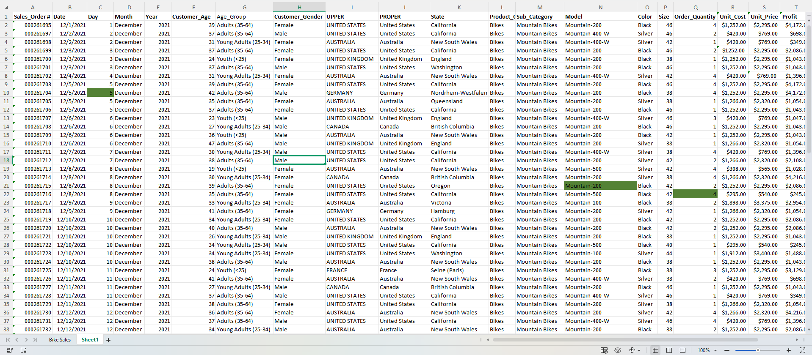
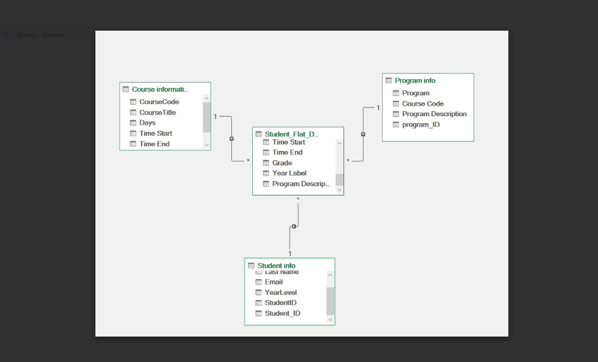

College
Currently studying Bachelor of Science in Computer Science at City College of Angeles.
Student Portfolio
BSCS Student | Aspiring Web Developer Professional
About Me
My name is Jonel T. Balberan, and I am a Computer Science student in BSCS-C302 at the City College of Angeles. I am passionate about exploring innovative technologies, solving complex problems, and collaborating with others to develop practical solutions. As an ENTJ, I excel in logical reasoning, strategic planning, and envisioning opportunities for growth. I aspire to make a meaningful impact in the IT industry by contributing to the development of advanced and efficient technological solutions.
I enjoy learning through hands-on activities, especially projects that involve problem solving, data organization, web design, and system development. Every task I complete helps me improve my technical knowledge, creativity, and confidence in using modern tools for academic and real-world work.
My goal is to continue developing my skills in programming, database management, and front-end development while building a strong foundation for future opportunities in software and web development.
Education
Currently studying Bachelor of Science in Computer Science at City College of Angeles.
Graduated from Angeles City National Trade School with a growing interest in technology and digital problem solving.
Focused on data handling, spreadsheet analysis, Power Query, web design, and project-based learning activities.
To strengthen my experience in web development and become a capable IT professional who can create useful and efficient systems.
Skills
Basic web development using HTML, CSS, and JavaScript, with experience in organizing layouts and improving user interface presentation.
Experience in data cleaning, pivot table analysis, Excel dashboards, and Power Query transformation for structured reporting.
Problem solving, teamwork, adaptability, strategic thinking, and a willingness to learn new tools and technologies.
Microsoft Excel, Power Query, GitHub, and basic front-end development tools for academic and personal portfolio projects.
Projects

This task focuses on organizing raw data, fixing errors, and preparing information for accurate analysis in Excel.
It highlights my ability to inspect records carefully, resolve inconsistencies, and transform messy datasets into a more reliable format.
Open Task Page
This project summarizes data through pivot tables to make trends, totals, and comparisons easier to understand.
It demonstrates how I use Excel tools to convert large sets of information into insights that are easier to read and present.
Open Task Page
This task uses Power Query to clean, transform, and model data into a more organized and usable format.
It reflects my understanding of structured workflows, repeatable transformations, and preparing data for reporting and analysis.
Open Task PageGoals
As a student developer, I want to continue improving my knowledge in software development, databases, and user-focused web applications. I aim to create projects that are not only functional but also meaningful and useful to the people who use them.
In the future, I hope to gain more experience in building complete systems, improving my design skills, and contributing to projects that solve real problems in school, business, and everyday life.
Contact
You can reach me directly through my email address below for academic collaboration, project opportunities, or professional connections.
Email: jonelbalberan6@gmail.com